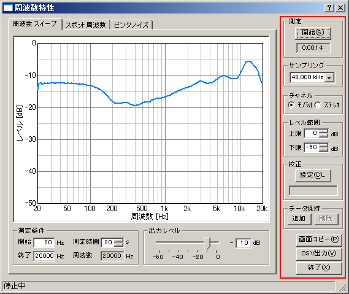

| 項目 | 説明 |
|---|---|
| 測定 |
[開始]ボタンをクリックすると、周波数特性の測定を開始します。測定中にクリックすると停止します。
[開始]ボタンの下には、測定を開始してからの経過時間を表示します。
|
| サンプリング | A/Dコンバータのサンプリング周波数を設定します。 |
| チャネル |
モノラル： 左チャネルのみで測定を行います。
ステレオ： 左右両方のチャネルで測定を行います。
|
| レベル範囲 | グラフの縦軸の最大レベルと最小レベルを入力します。 |
| 校正 | クリックするとマイク校正画面が開きます。使用するマイクロホンの校正データの選択、編集、保存を行います。 |
| データ保持 | 測定済みのデータを指定した色で保持し、他の測定値と比較することができます。 |
| 画面コピー | クリックした時点のグラフを別ウィンドウで開きます。同時にいくつでも表示可能です。 |
| CSV出力 | 測定したデータをCSV形式でファイルに出力します。 |
| 終了 | 歪率測定のウィンドウを閉じます。 |